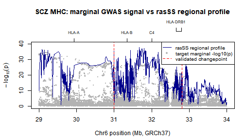

Introduction
This vignette demonstrates the rasSS workflow on real
GWAS summary statistics and a real 1000 Genomes LD reference panel. We
analyze the Major Histocompatibility Complex (MHC) region on Chromosome
6, a well-known locus for Schizophrenia risk.
We use the scan_block() function, which handles:
- Ingesting and standardizing discovery and target summary statistics.
- Intersecting them with a PLINK binary reference panel.
- Extracting dosages and computing the empirical LD matrix.
- Harmonizing alleles (flipping strands, dropping palindromic SNPs).
- Running the summary-statistic RAS scan and calling peaks.
Data Sources
- Discovery GWAS: Schizophrenia 2018 (CLOZUK + PGC)
- Target GWAS: Schizophrenia 2022 (PGC)
- LD Reference: 1000 Genomes Phase 3 EUR panel
- Region: Chromosome 6, 29Mb to 34Mb (MHC Class II region)
Running the Analysis
Assuming you have the summary statistics and the PLINK reference
files (chr6_eur.bed, .bim, .fam)
in your data/ directory, the entire pipeline is executed
via a single idempotent call to scan_block().
library(rasSS)
res <- scan_block(
disc_path = "data/sumstats/scz2018_clozuk.tsv.gz",
targ_path = "data/sumstats/scz2022.tsv.gz",
chr = 6,
start_bp = 29e6,
end_bp = 34e6,
ref_prefix = "data/1000G/chr6_eur",
plink2 = "plink2", # or path to plink2 executable
out_rds = "data/results/blk_scz_chr6_mhc.rds",
skip1 = 10,
skip2 = 5,
min_window_size = 5,
max_window_size = 20,
window_size = 20,
slope_check_window_size = 8,
slope_threshold = 1e-4,
davies_threshold = 1e-5
)
#> skip: exists data/results/blk_scz_chr6_mhc.rdsBecause scan_block() is idempotent, if the
out_rds file already exists, it will instantly load and
return the cached results without re-running PLINK or the scan.
Visualizing the RAS Profile
Let’s load the cached results and plot the \(-\log_{10}(p)\) Regional Association Score (RAS) profile across the MHC region.
# For demonstration purposes, we load the pre-computed .rds file
# generated by the package verification script.
rds_path <- "data/results/blk_scz_chr6_mhc.rds"
if (file.exists(rds_path)) {
res <- readRDS(rds_path)
targ <- read_sumstats("data/sumstats/scz2022.tsv.gz",
chr = 6, start_bp = 29e6, end_bp = 34e6)
marg <- -log10(2 * pnorm(-abs(targ$z))) # target marginal signal from Z
px <- res$bp[res$scan$x] / 1e6
# Extra room at the top so the title and axis don't crash
par(mar = c(4.5, 4.5, 6, 1.5))
# Plot code
plot(targ$bp / 1e6, marg, type = "p", pch = 16, cex = 0.25, col = "grey70",
xlab = "Chr6 position (Mb, GRCh37)", ylab = expression(-log[10](p)),
main = "", # Remove main here, we'll place it higher manually
ylim = c(0, max(marg, res$scan$y) * 1.05))
lines(px, res$scan$y, col = "darkblue", lwd = 1)
abline(v = res$peaks$bp / 1e6, col = "red", lty = 2, lwd = 1.5)
# Add the title higher up so it doesn't overlap the axis
title(main = "SCZ MHC: marginal GWAS signal vs rasSS regional profile", line = 4)
# Fix the top axis by splitting it into two rows (line=0 and line=1.5)
axis(3, at = c(29.94, 31.35, 32.00),
labels = c("HLA-A", "HLA-B", "C4"),
tick = TRUE, cex.axis = 0.7, line = 0)
axis(3, at = c(32.65, 32.79),
labels = c("HLA-DRB1", "HLA-DQB2"),
tick = TRUE, cex.axis = 0.7, line = 1.5)
# Legend moved down and given a white box so it hides the dots
legend("topright",
legend = c("rasSS regional profile", "target marginal -log10(p)",
"validated changepoint"),
col = c("darkblue", "grey70", "red"), lty = c(1, NA, 2),
pch = c(NA, 16, NA), lwd = c(1, NA, 1.5),
bty = "o", bg = "white", box.col = "black", # Added solid box
cex = 0.8)
cat(sprintf("Intersected: %d | Kept: %d (%.1f%%) | Peaks: %s\n",
res$n_intersect, res$n_kept, 100 * res$n_kept / res$n_in,
paste(format(res$peaks$bp, big.mark = ","), collapse = " ; ")))
} else {
message("RDS not found. Run the scan_block() chunk first.")
}
#> [read_sumstats] read: 7659767 rows, 8 cols
#> [read_sumstats] after chr filter: 509260
#> [read_sumstats] after bp filter: 34434
#> [read_sumstats] final: 34434
#> Intersected: 21816 | Kept: 18720 (85.8%) | Peaks: 30,993,128 ; 32,798,789Interpreting the Output
The scan_block() function returns a list containing:
-
scan: The RAS profile (x= SNP indices,y= \(-\log_{10}(p)\)). -
peaks: A data frame of validated changepoints mapped to SNP indices, grid indices, and exact base-pair positions. -
bp: The base-pair positions of all SNPs that passed harmonization. -
n_intersect,n_kept,n_in: Quality control metrics showing how many SNPs survived the intersection with the LD reference and the allele harmonization step.
By relying on external LD reference panels and summary statistics,
rasSS bypasses the need for individual-level genotype data
while maintaining the rigorous regional change-point detection of the
original RAS algorithm.